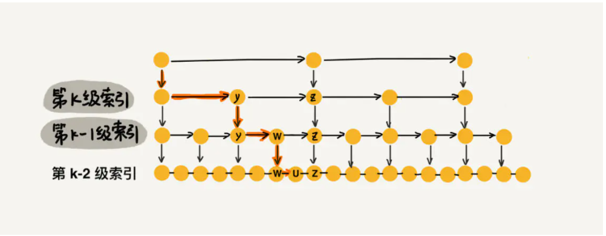
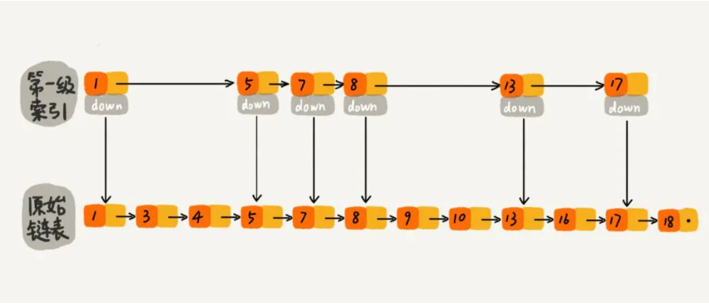
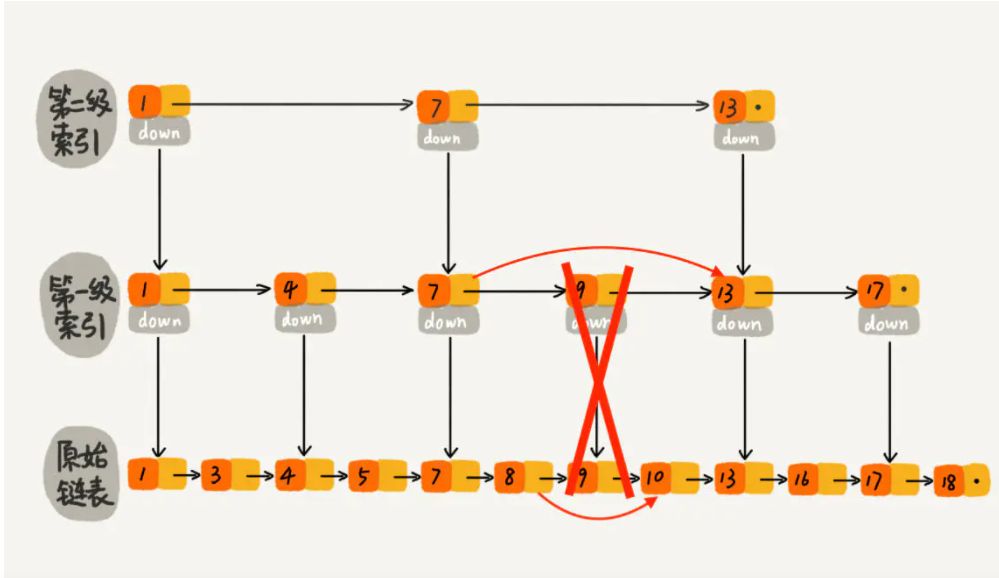
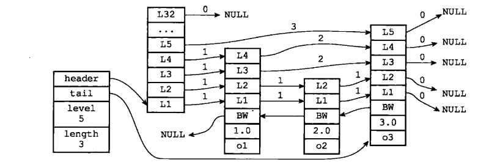

跳跃表(Skip List)简介
1、什么是跳跃表
跳跃表示Redis中有序集合的底层实现之一，相较于红黑树，有着自己的特性。跳跃表的插入，删除，查找的时间复杂度都是和红黑树一样的，但是跳跃表允许进行区间查找，只需要找到区间的起点，顺序往后查找即可，能够做到O(log(n))的时间复杂度。
在日常的使用中，如果需要的是一个能够进行二分查找，又能快速添加和删除元素的数据结构，首先就是二叉查找树，二叉查找树在最坏情况下可能变成一个链表；
于是就出现了平衡二叉树，根据平衡的算法不同有AVL树，B-Tree，B+Tree，红黑树等，但是AVL树实现起来比较复杂，
跳跃表简单来说就是能够实现二分查找的有序链表，相对于我们常见的单链表，跳跃表维护了多层次的指针，不同层次的指针之间间隔的数据不同，是一种典型的用空间换时间的算法。

从图中可以看出，每个链表节点都保存了很多的指针，从上往下，指针之间的距离越来越近。
2、跳跃表的查找，删除，插入等操作
- 跳跃表查找

如上图所示，粗线代表查找元素的路径。在每两个节点抽一个作为上层节点的情况下，跳跃表的最大层数为 log2n，每层最多遍历三个节点，因此查询的时间复杂度为O(log(n))。
- 跳跃表插入
由于跳跃表需要维护其结构，而如果直接进行插入会使得最底层的节点数越来越多，跳跃表的效率就会越来越低，类似非平衡二叉树的插入过程一样。为此我们需要在插入节点的过程中维护跳跃表的结构。
假如跳表每一层的晋升概率是 1/2，最理想的索引就是在原始链表中每隔一个元素抽取一个元素做为一级索引。换种说法，我们在原始链表中随机的选 n/2 个元素做为一级索引是不是也能通过索引提高查找的效率呢？ 当然可以了，因为一般随机选的元素相对来说都是比较均匀的。如下图所示，随机选择了n/2 个元素做为一级索引，虽然不是每隔一个元素抽取一个，但是对于查找效率来讲，影响不大，比如我们想找元素 16，仍然可以通过一级索引，使得遍历路径较少了将近一半。如果抽取的一级索引的元素恰好是前一半的元素 1、3、4、5、7、8，那么查找效率确实没有提升，但是这样的概率太小了。我们可以认为：当原始链表中元素数量足够大，且抽取足够随机的话，我们得到的索引是均匀的。我们要清楚设计良好的数据结构都是为了应对大数据量的场景，如果原始链表只有 5 个元素，那么依次遍历 5 个元素也没有关系，因为数据量太少了。所以，我们可以维护一个这样的索引：随机选 n/2 个元素做为一级索引、随机选 n/4 个元素做为二级索引、随机选 n/8 个元素做为三级索引，依次类推，一直到最顶层索引。这里每层索引的元素个数已经确定，且每层索引元素选取的足够随机，所以可以通过索引来提升跳表的查找效率。

可以在每次新插入元素的时候，尽量让该元素有 1/2 的几率建立一级索引、1/4 的几率建立二级索引、1/8 的几率建立三级索引，以此类推，就能满足我们上面的条件。现在我们就需要一个概率算法帮我们把控这个 1/2、1/4、1/8 … ，当每次有数据要插入时，先通过概率算法告诉我们这个元素需要插入到几级索引中，然后开始维护索引并把数据插入到原始链表中。
- 跳跃表删除

跳跃表删除的时候直接将该节点所在的每层索引全部删除即可。
3、跳跃表的Redis实现
Redis中跳跃表由redis.h/zskiplistNode和redis.h/zskiplist两个结构体组成；zskiplistNode用于表示跳跃表节点，zskiplist用于保存跳跃表节点的相关信息，包括节点的数量，表头指针，表尾指针等；
1 | typedef struct zskiplist { |
1 | typedef struct zskiplistNode { |

4、参考
[1] https://www.jianshu.com/p/9d8296562806
[2] https://developer.aliyun.com/article/388027